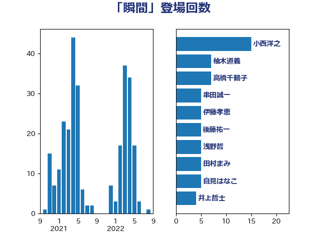

単語「瞬間」

| 小西洋之 | 立憲民主党 | 15 回 |
| 柚木道義 | 立憲民主党 | 7 回 |
| 高橋千鶴子 | 日本共産党 | 7 回 |
| 串田誠一 | 日本維新の会 | 5 回 |
| 伊藤孝恵 | 国民民主党 | 5 回 |
| 後藤祐一 | 立憲民主党 | 5 回 |
| 浅野哲 | 国民民主党 | 5 回 |
| 田村まみ | 国民民主党 | 5 回 |
| 自見はなこ | 自由民主党 | 5 回 |
| 井上哲士 | 日本共産党 | 4 回 |
| 石橋通宏 | 立憲民主党 | 4 回 |
| 萩生田光一 | 自由民主党 | 4 回 |
| 寺田学 | 立憲民主党 | 3 回 |
| 山岡達丸 | 立憲民主党 | 3 回 |
| 岡本あき子 | 立憲民主党 | 3 回 |
| 田村貴昭 | 日本共産党 | 3 回 |
| 神谷裕 | 立憲民主党 | 3 回 |
| 野田佳彦 | 立憲民主党 | 3 回 |
| 三浦信祐 | 公明党 | 2 回 |
| 上田清司 | 国民民主党 | 2 回 |
| 仁木博文 | 無所属 | 2 回 |
| 伴野豊 | 立憲民主党 | 2 回 |
| 吉良よし子 | 日本共産党 | 2 回 |
| 嘉田由紀子 | 無所属 | 2 回 |
| 国光あやの | 自由民主党 | 2 回 |
| 宮本岳志 | 日本共産党 | 2 回 |
| 小林鷹之 | 自由民主党 | 2 回 |
| 小沼巧 | 立憲民主党 | 2 回 |
| 小野寺五典 | 自由民主党 | 2 回 |
| 山井和則 | 立憲民主党 | 2 回 |
| 山岸一生 | 立憲民主党 | 2 回 |
| 山田太郎 | 自由民主党 | 2 回 |
| 山際大志郎 | 自由民主党 | 2 回 |
| 岩本剛人 | 自由民主党 | 2 回 |
| 岩谷良平 | 日本維新の会 | 2 回 |
| 川合孝典 | 国民民主党 | 2 回 |
| 櫻井周 | 立憲民主党 | 2 回 |
| 沢田良 | 日本維新の会 | 2 回 |
| 田島麻衣子 | 立憲民主党 | 2 回 |
| 田嶋要 | 立憲民主党 | 2 回 |
| 福山哲郎 | 立憲民主党 | 2 回 |
| 福島伸享 | 無所属 | 2 回 |
| 穀田恵二 | 日本共産党 | 2 回 |
| 若宮健嗣 | 自由民主党 | 2 回 |
| 西村康稔 | 自由民主党 | 2 回 |
| 遠藤敬 | 日本維新の会 | 2 回 |
| 金村龍那 | 日本維新の会 | 2 回 |
| 青柳仁士 | 日本維新の会 | 2 回 |
| 青柳陽一郎 | 立憲民主党 | 2 回 |
| 馬場雄基 | 立憲民主党 | 2 回 |
| 高階恵美子 | 自由民主党 | 2 回 |
| こやり隆史 | 自由民主党 | 1 回 |
| 一谷勇一郎 | 日本維新の会 | 1 回 |
| 上川陽子 | 自由民主党 | 1 回 |
| 上月良祐 | 自由民主党 | 1 回 |
| 上野通子 | 自由民主党 | 1 回 |
| 世耕弘成 | 自由民主党 | 1 回 |
| 丹羽秀樹 | 自由民主党 | 1 回 |
| 二階俊博 | 自由民主党 | 1 回 |
| 井上英孝 | 日本維新の会 | 1 回 |
| 伊佐進一 | 公明党 | 1 回 |
| 伊波洋一 | 無所属 | 1 回 |
| 住吉寛紀 | 日本維新の会 | 1 回 |
| 佐藤正久 | 自由民主党 | 1 回 |
| 勝部賢志 | 立憲民主党 | 1 回 |
| 古賀之士 | 立憲民主党 | 1 回 |
| 吉川元 | 立憲民主党 | 1 回 |
| 吉田宣弘 | 公明党 | 1 回 |
| 堀場幸子 | 日本維新の会 | 1 回 |
| 宮内秀樹 | 自由民主党 | 1 回 |
| 宮崎政久 | 自由民主党 | 1 回 |
| 宮本徹 | 日本共産党 | 1 回 |
| 小川淳也 | 立憲民主党 | 1 回 |
| 小泉進次郎 | 自由民主党 | 1 回 |
| 尾辻秀久 | 無所属 | 1 回 |
| 岡本三成 | 公明党 | 1 回 |
| 岬麻紀 | 日本維新の会 | 1 回 |
| 岸田文雄 | 自由民主党 | 1 回 |
| 岸真紀子 | 立憲民主党 | 1 回 |
| 平木大作 | 公明党 | 1 回 |
| 庄子賢一 | 公明党 | 1 回 |
| 新垣邦男 | 立憲民主党 | 1 回 |
| 有村治子 | 自由民主党 | 1 回 |
| 杉久武 | 公明党 | 1 回 |
| 杉田水脈 | 自由民主党 | 1 回 |
| 松原仁 | 立憲民主党 | 1 回 |
| 柿沢未途 | 無所属 | 1 回 |
| 梅村みずほ | 日本維新の会 | 1 回 |
| 森山浩行 | 立憲民主党 | 1 回 |
| 櫻井充 | 自由民主党 | 1 回 |
| 武井俊輔 | 自由民主党 | 1 回 |
| 浮島智子 | 公明党 | 1 回 |
| 田村憲久 | 自由民主党 | 1 回 |
| 石川香織 | 立憲民主党 | 1 回 |
| 石田昌宏 | 自由民主党 | 1 回 |
| 福田達夫 | 自由民主党 | 1 回 |
| 秋本真利 | 自由民主党 | 1 回 |
| 穂坂泰 | 自由民主党 | 1 回 |
| 竹内真二 | 公明党 | 1 回 |
| 笠浩史 | 無所属 | 1 回 |
| 米山隆一 | 立憲民主党 | 1 回 |
| 細野豪志 | 自由民主党 | 1 回 |
| 緒方林太郎 | 無所属 | 1 回 |
| 菅義偉 | 自由民主党 | 1 回 |
| 藤岡隆雄 | 立憲民主党 | 1 回 |
| 藤木眞也 | 自由民主党 | 1 回 |
| 西銘恒三郎 | 自由民主党 | 1 回 |
| 赤木正幸 | 日本維新の会 | 1 回 |
| 赤羽一嘉 | 公明党 | 1 回 |
| 足立康史 | 日本維新の会 | 1 回 |
| 進藤金日子 | 自由民主党 | 1 回 |
| 金子俊平 | 自由民主党 | 1 回 |
| 金田勝年 | 自由民主党 | 1 回 |
| 鈴木敦 | 国民民主党 | 1 回 |
| 長坂康正 | 自由民主党 | 1 回 |
| 長浜博行 | 無所属 | 1 回 |
| 阿部知子 | 立憲民主党 | 1 回 |
| 青山繁晴 | 自由民主党 | 1 回 |
| 音喜多駿 | 日本維新の会 | 1 回 |
| 高木かおり | 日本維新の会 | 1 回 |